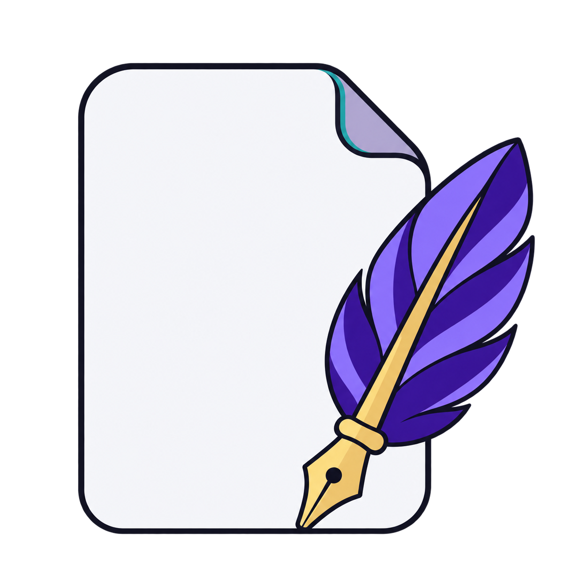
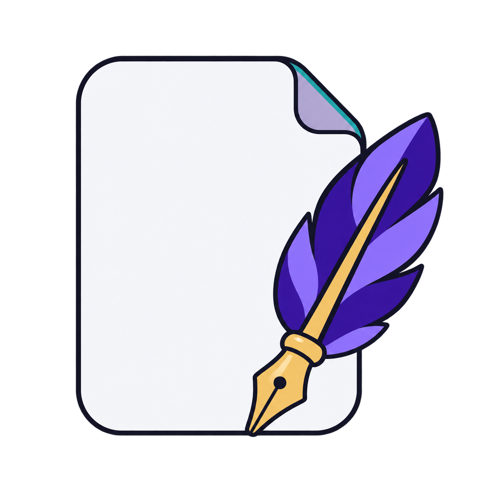
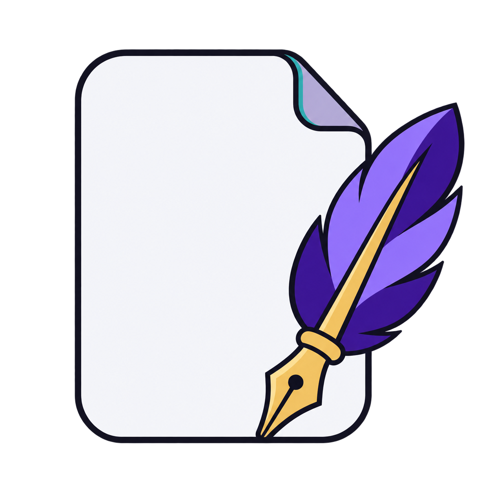
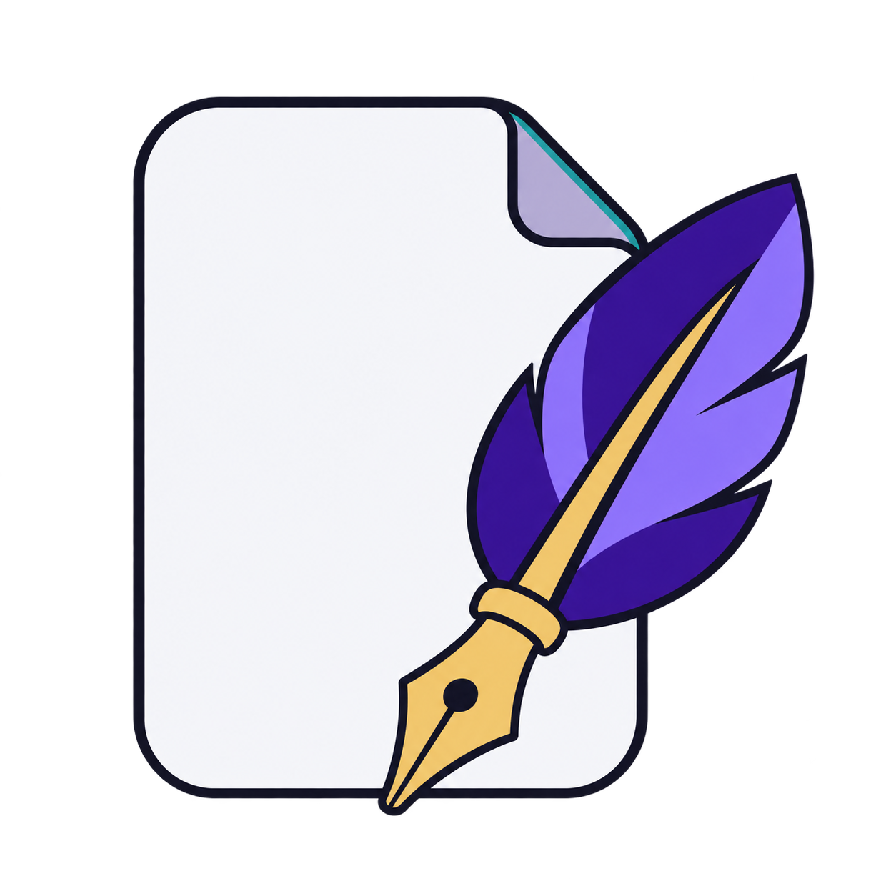

Page + purple feather + gold nib. Draft product artwork, separate from the official company logo.




Generated with the built-in image generation tool. Final artwork needs exact flat-color vector cleanup and small-size optical review before Windows icon packaging.